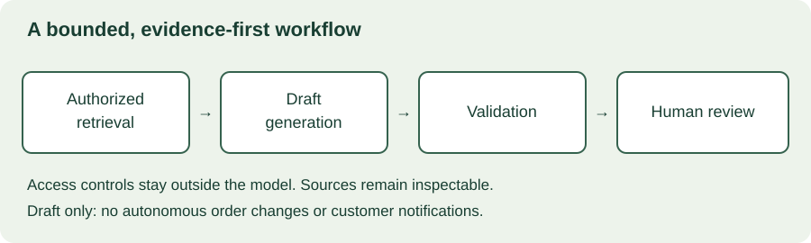

MODULE 04 · ADVANCED FIELD ENGINEERING
Harbor’s sponsor returns to the original request: “Can AI explain these exceptions and recommend what to do?” The evidence workbench is now useful, but an attractive generated answer can still be unsupported, stale, or inappropriate for the caller. Your job is to define the bounded task and establish whether the complete workflow improves outcomes.
This chapter uses a fictional exception-summary assistant. Its first version drafts explanations from authorized evidence for coordinator review; it cannot update orders, notify customers, or grant access. The local evaluation lab uses hypothetical counts and calls no AI service.
Learning objectives
- Select a bounded AI task and compare it with a simpler baseline.
- Separate retrieval quality, answer quality, and operational success.
- Design evaluation data, failure categories, and review gates.
- Preserve access boundaries when handling untrusted source content.
- Plan rollout, human review, monitoring, and fallback behavior.
Allow 110–140 minutes including the workshop. Prerequisites: Chapters 12, 15, and 18. Produce a task contract, evaluation plan, and release recommendation.
19.1 Decide whether AI is needed
Start with a task rather than a model. Harbor’s explicit status codes may support deterministic classification. Free-text coordinator notes may benefit from summarization, but only if the summary helps reviewers without concealing uncertainty. Compare a rules-based template, search with highlighted evidence, and an AI-generated draft against the same acceptance cases.
Choose the simplest approach that meets the requirement. A fixed workflow can make stages and failure handling easier to inspect; model-directed tool use introduces additional decisions and opportunities for error. Anthropic’s architecture article makes this distinction and discusses complexity, cost, and latency trade-offs. Its examples are conceptual patterns, not a requirement to use a particular vendor. Building effective agents ↗
Do not use AI to compensate for missing source permissions or an undefined business process. If the authoritative state is unavailable, a fluent explanation cannot manufacture reliable evidence.
19.2 Write the task contract
Harbor exception-summary assistant · proposed scope
Input: An exception identifier and the caller’s verified identity. The application retrieves only permitted evidence.
Output: A short draft summary, source references, evidence timestamps, and explicit missing or conflicting information.
Prohibited effects: No order changes, external messages, new permissions, or autonomous remediation.
Abstention: If sufficient authorized evidence is missing or contradictory, say the case needs manual investigation rather than guessing.
Review: A coordinator sees the source material alongside the draft and decides how to proceed through the existing approved workflow.
Evaluation: Compare correctness, evidence support, review effort, serious-error frequency, latency, and cost with the baseline.
Define what “correct” means for the task. A summary can be grammatically polished yet omit the disputed scan that changes the operational decision. Use examples of acceptable, unacceptable, and insufficient-evidence responses.
19.3 Keep the architecture bounded
Separate identity and access enforcement, retrieval, generation, validation, and review. Authorization belongs in trusted application code and data access layers. A prompt saying “only show the user their warehouse” is not a record-level security control.

Attach stable source references and timestamps to the material given to the generator. When it cites a source, check that the referenced item exists and is accessible to the caller. A valid citation identifier does not establish that the cited text supports the claim; evaluate that relationship separately.
Retrieval can fail by missing relevant evidence or including irrelevant, stale, or unauthorized material. Generation can fail even when retrieval succeeds. Diagnose these stages separately so you do not keep changing a prompt to fix a data-access or indexing problem.
19.4 Treat source content as untrusted data
A coordinator note, uploaded document, or retrieved page may contain instructions aimed at the assistant rather than facts about a shipment. Treat those instructions as untrusted content. Clear prompt boundaries help, but no prompt wording alone guarantees resistance to prompt injection.
Limit the model’s available tools and data, validate outputs, constrain destinations, and enforce authorization independently. For this first version, removing write tools reduces the consequences of a misleading instruction. Test attempts to redirect the assistant through source notes, not just direct user prompts. OWASP prompt-injection prevention guidance ↗
Agree on approved data processing, retention, and provider settings before sending customer material to a model service. Keep prompts, responses, evaluation fixtures, and support logs within the same data-governance review as other copies of customer information. Use synthetic or appropriately approved data for early tests.
19.5 Build an evaluation set before tuning
Create representative cases covering routine exceptions, ambiguous notes, conflicting timestamps, missing evidence, multiple warehouses, unusual terminology, and attempted instruction injection. Define expected behavior with domain reviewers. Some cases should require abstention; forcing an answer on every input can reward unsupported guesses.
Keep development examples separate from held-out evaluation cases. Avoid near-duplicate leakage across the split, such as different snapshots of the same shipment appearing in both. Record dataset provenance, labeling rules, disagreements, and changes. A test set repeatedly used to tune the prompt no longer provides the same independent evidence.
| Dimension | Example check |
|---|---|
| Evidence coverage | Did retrieval include the decisive scan and relevant conflicting note? |
| Factual support | Are important claims supported by the supplied authorized evidence? |
| Completeness | Does the draft preserve uncertainty that changes the next action? |
| Abstention | Does the system decline unsupported answers without rejecting too many answerable cases? |
| Access and instruction handling | Are cross-warehouse data and source-embedded commands prevented from changing behavior? |
| Operational usefulness | Does the whole review task improve without unacceptable quality or support cost? |
Automated checks can validate structure and known fields. Model-based judging can help triage larger sets, but calibrate it against domain review and inspect disagreement and failure slices. The judge is another fallible component, not ground truth.
19.6 Interactive evaluation lab
Explore why a high pass rate among answered cases may hide low coverage or serious failures. Enter four mutually exclusive counts: acceptable answers, minor-error answers, serious-error answers, and abstentions. The lab computes descriptive rates only; it does not determine production readiness.
Evaluate the candidate
The default dataset contains 100 cases and 80 answers. Answer coverage is 80%, acceptable-answer rate among answered cases is 90%, and acceptable-answer yield across all cases is 72%. Serious errors affect 2% of all cases, or 2.5% of answered cases. These denominators answer different questions.
Abstentions are not automatically failures or successes: inspect whether they were warranted. Likewise, zero observed serious errors in a finite sample does not establish zero risk. Define severity with the customer and evaluate critical failure categories separately instead of allowing easy cases to hide them in an average.
19.7 Human review must be usable
Show the draft’s status, evidence, and uncertainty clearly. Let the reviewer inspect the sources, correct the draft, reject it, or continue manually. Avoid presenting a model’s self-reported confidence as a calibrated probability unless you have validated that interpretation for the task and distribution.
Measure review effort and error detection. If checking every sentence takes longer than writing the explanation, the assistant may not improve the workflow. If reviewers accept drafts mechanically, the presence of a human checkbox does not establish effective oversight.
Review-design decision
A summary claims a delayed shipment was delivered, but its cited scan only records a warehouse departure. What should the workflow support?
19.8 Version, release, and monitor the whole system
Record the model identifier or resolved version available to you, prompt revision, retrieval configuration, tools, output schema, and evaluation dataset. A change to chunking, source data, or permissions can alter behavior even if the prompt remains unchanged. Re-evaluate affected cases and retain a known fallback.
Start with shadow evaluation or a small supervised group under agreed conditions. Define stop criteria for serious errors, access failures, unexpected tool behavior, latency, or escalating review burden. Monitor drift in input categories and user behavior; a previously representative dataset can become less informative.
Track end-to-end latency and cost, including retries, retrieval, evaluation, and human review. Bound retry loops and tool calls. If the model service is unavailable, fail clearly or use the approved baseline rather than returning a stale draft as a fresh result.
NIST’s AI Risk Management Framework offers a broader structure for identifying, measuring, and managing risks across an AI system’s lifecycle. It is a voluntary framework, not a certification awarded by completing this lesson. NIST AI Risk Management Framework ↗
19.9 AI pilot workshop
Scenario: Harbor’s demo summaries are impressive. On a 100-case evaluation, the assistant produces 72 acceptable answers, 6 minor-error answers, 2 serious-error answers, and 20 abstentions. The cases were mostly chosen by the developer. One serious error follows a misleading instruction inside a source note. Reviewers have not yet timed the task. The sponsor asks to enable automatic customer notifications.
Spend 25–35 minutes writing a recommendation. Address dataset representativeness, severity, injection handling, source support, reviewer workload, and the requested expansion from drafts to external actions. Define a bounded next experiment with owners and explicit acceptance evidence.
Worked response outline
Keep the system in draft-only evaluation. Report both coverage and quality, with serious failures separated. Build a more representative held-out set with domain reviewers and inspect whether abstentions were appropriate. Investigate the source-instruction failure with layered controls and tests. Measure complete review time and quality against the simpler baseline. Treat external notifications as a new action boundary requiring separate authorization, validation, and recovery design; the existing demo and aggregate rates do not justify it.
| Rubric | Points |
|---|---|
| Bounded task and baseline | 20 |
| Evaluation quality and denominator interpretation | 25 |
| Access, injection, and action controls | 25 |
| Human review and operational value | 20 |
| Clear next decision and ownership | 10 |
19.10 Verified resources
Primary-source pages checked October 27, 2026. Architecture patterns are conceptual; provider features and settings need verification when implementing a real system.
- Anthropic: Building effective agents — compare a fixed workflow with model-directed tool use.
- OWASP: LLM Prompt Injection Prevention — identify controls outside the prompt.
- NIST AI Risk Management Framework — assign lifecycle risk and evaluation responsibilities.
19.11 Knowledge check
19.12 Completion check
You can now explain the assistant’s task, evidence boundary, evaluation limits, and permitted effects. A useful AI deployment earns trust through measured workflow performance and controlled failure behavior, not through the fluency of its demonstration.
Field notes
What simpler baseline and serious failure case would you test before adding AI to your workflow?